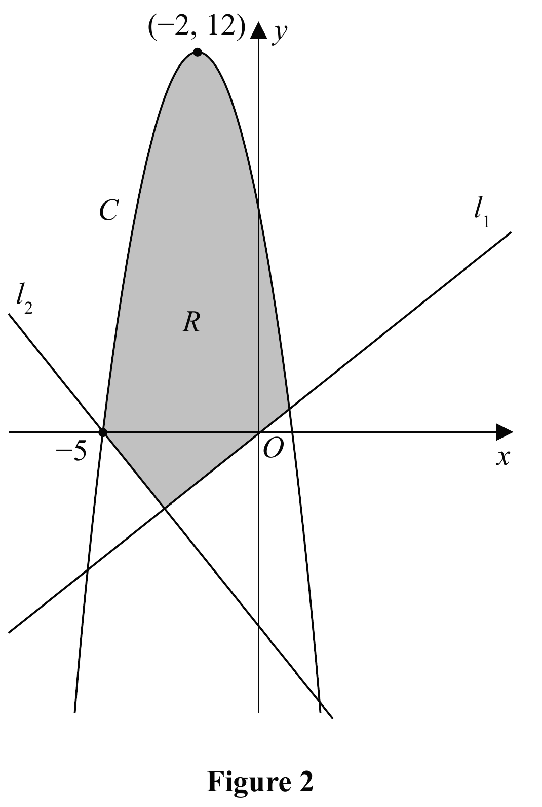
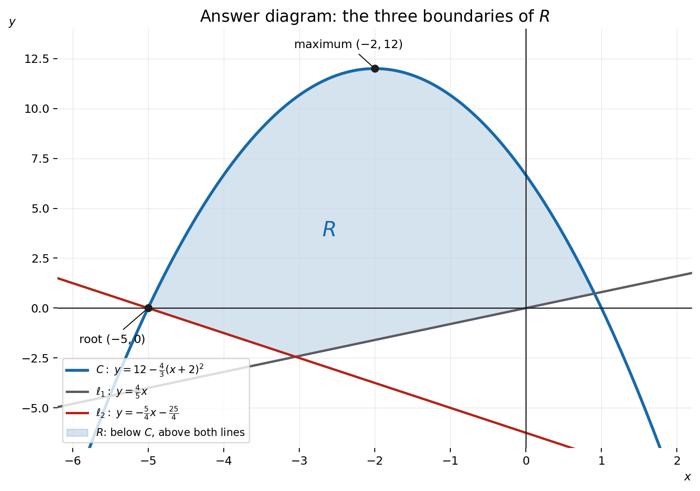

The curve \(C\) has equation \(y=f(x)\)
Given that
- \(f(x)\) is a quadratic expression
- the maximum turning point on \(C\) has coordinates \((-2,12)\)
- \(C\) cuts the negative \(x\)-axis at \(-5\)
(a) find \(f(x)\)
(4)
The line \(l_1\) has equation \(y=\frac45x\)
Given that the line \(l_2\) is perpendicular to \(l_1\) and passes through \((-5,0)\)
(b) find an equation for \(l_2\), writing your answer in the form \(y=mx+c\) where \(m\) and \(c\) are constants to be found.
(3)
Figure 2 shows a sketch of the curve \(C\) and the lines \(l_1\) and \(l_2\)
(c) Define the region \(R\), shown shaded in Figure 2, using inequalities.
(2)
Not covered in the lesson — official-reference reconstruction below.
[9 marks]

Strategy and why this applies. Use vertex form because the maximum is supplied, then use the intercept to determine the scale factor.
Formula and setup. A quadratic with turning point \((h,k)\) can be written in completed-square form \(f(x)=a(x-h)^2+k\). Here \(h=-2\) and \(k=12\), so \(f(x)=a(x+2)^2+12\). The graph has a maximum, not a minimum, so the coefficient \(a\) must be negative. This sign check already rules out a positive scale factor.
Determine the coefficient from the root. The phrase “cuts the negative \(x\)-axis at \(-5\)” supplies the point \((-5,0)\). Substitute it:
\[0=a(-5+2)^2+12=9a+12.\]Therefore \(9a=-12\), so \(a=-\tfrac43\). Hence
\[f(x)=12-\frac43(x+2)^2.\]Equivalent factored and expanded forms. The axis of symmetry is \(x=-2\). Since one root is \(-5\), the other is the same distance on the other side: \(1\). Thus \(f(x)=-\tfrac43(x+5)(x-1)\). Expanding, \((x+5)(x-1)=x^2+4x-5\), so \(f(x)=-\tfrac43x^2-\tfrac{16}{3}x+\tfrac{20}{3}\).
Sense check and transfer trigger. Substituting \(x=-2\) gives \(12\), while \(x=-5\) and \(x=1\) give zero; the negative leading coefficient confirms a maximum. On another paper, a supplied turning point should trigger vertex form immediately. Use one additional point to find the scale factor, then convert forms only if the next part needs roots or coefficients.
Strategy and why this applies. Use the perpendicular-gradient condition, then point-gradient form through the supplied point.
Definition first. Perpendicular non-vertical lines satisfy \(m_1m_2=-1\). Since \(m_1=\tfrac45\), the second gradient is its negative reciprocal:
\[m_2=-\frac{1}{4/5}=-\frac54.\]Build the line through the point. Point-gradient form is \(y-y_1=m(x-x_1)\). With \((x_1,y_1)=(-5,0)\),
\[y-0=-\frac54\bigl(x-(-5)\bigr)=-\frac54(x+5).\]Expand only after the geometric setup is secure:
\[y=-\frac54x-\frac{25}{4}.\]Check and hard transition. The gradient product is \((\tfrac45)(-\tfrac54)=-1\), so the lines are perpendicular. At \(x=-5\), the right-hand side is \(25/4-25/4=0\), so the line passes through the required point. Both conditions are necessary: a line with the right gradient but wrong intercept is not \(\ell_2\).
Transfer trigger. Whenever a question says “perpendicular”, write \(m_1m_2=-1\) before using a point. Whenever it asks for \(y=mx+c\), point-gradient form is the safest route because it keeps the signs of a negative coordinate visible until the final expansion.
Strategy and why this applies. Treat each boundary separately and use a point visibly inside the shaded region to choose above/below.
Definition first. A region bounded by graphs is the intersection of the corresponding half-planes. Figure 2 places \(R\) below the downward-opening curve and above both straight lines. Therefore translate “below” into \(y\le\) and “above” into \(y\ge\).
Below \(C\):
\[y\le-\frac43x^2-\frac{16}{3}x+\frac{20}{3}.\]Above \(\ell_1\):
\[y\ge\frac45x.\]Above \(\ell_2\):
\[y\ge-\frac54x-\frac{25}{4}.\]Boundary and direction check. The solid curves belong to the bounded region, so non-strict inequalities are natural; the mark scheme also accepts a consistently strict version. A quick sample-point check should use a point drawn inside \(R\), not an arbitrary origin that may lie on a boundary. Its \(y\)-coordinate must be smaller than the parabola value and larger than both line values. This tests all three signs independently.
Transfer trigger. For shaded-region questions, never guess signs from whether a formula “looks positive”. Read each boundary vertically: region above graph means \(y\ge g(x)\); region below means \(y\le g(x)\). List every independent boundary—omitting either line leaves an unbounded set and cannot describe the triangular-looking shaded region.
Sense check. A point drawn inside R must satisfy all three inequalities simultaneously; failure of any one sign places it outside the bounded region.
Annotated answer diagram. The shaded set is simultaneously below the parabola and above both straight lines; each printed boundary is included.
